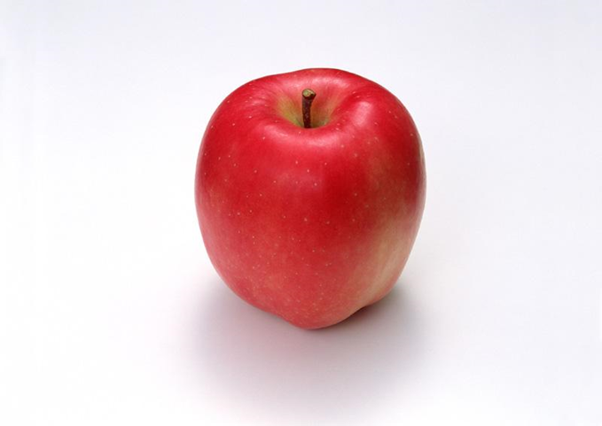
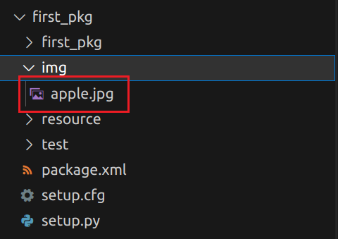

<!DOCTYPE lake>
<p data-lake-id="u3c267d96" id="u3c267d96"><span class="lake-fontsize-12" data-lake-id="u342b4a91" id="u342b4a91" style="color: rgb(0, 0, 0)">接下来我们就以机器视觉的任务为例，模拟实际机器人中节点的实现过程。</span></p><p data-lake-id="u033b56fd" id="u033b56fd"></p><h1 data-lake-id="pgOKo" id="pgOKo"><span data-lake-id="ub9ef2173" id="ub9ef2173">安装opencv库</span></h1><span class="yuque-card-unsupported">[codeblock]</span><h1 data-lake-id="YAGmD" id="YAGmD"><span data-lake-id="u5a1f2d2f" id="u5a1f2d2f">图片资源处理</span></h1><h2 data-lake-id="zaJZS" data-lake-index-type="2" id="zaJZS"><span data-lake-id="u099c59ab" id="u099c59ab">将图片放在package下img目录下</span></h2><p data-lake-id="u508e6631" id="u508e6631"></p><h2 data-lake-id="CNvvA" data-lake-index-type="2" id="CNvvA"><span data-lake-id="uf087d722" id="uf087d722">在setup.py中配置</span></h2><span class="yuque-card-unsupported">[codeblock]</span><blockquote data-lake-id="ub0a3fb0c" id="ub0a3fb0c"><p data-lake-id="uc97eb64f" id="uc97eb64f"><span data-lake-id="ubbae9c59" id="ubbae9c59">需要导入os和glob</span></p></blockquote><span class="yuque-card-unsupported">[codeblock]</span><h2 data-lake-id="ckIKJ" data-lake-index-type="2" id="ckIKJ"><span data-lake-id="u87988f24" id="u87988f24">加载图片</span></h2><span class="yuque-card-unsupported">[codeblock]</span><h1 data-lake-id="kkzPL" id="kkzPL"><span data-lake-id="ude1eff09" id="ude1eff09">完整代码</span></h1><span class="yuque-card-unsupported">[codeblock]</span><h1 data-lake-id="UfMv8" id="UfMv8"><span data-lake-id="ud0d748b7" id="ud0d748b7">摄像头识别完整代码</span></h1><span class="yuque-card-unsupported">[codeblock]</span>